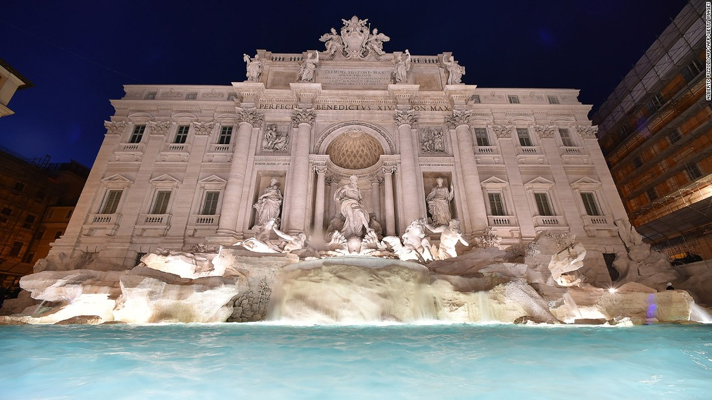

Main Page
Politics
Sports
Entertainment
Music
Fernando Alonso: McLaren driver says Honda are risking reputation:
Chelsea worthy champions
Soccer: Malaysia appeal against North Korea match in Pyongyang
30 reseason to visit italy

Next Europe destination
Africa's best national parks
Wonder woman "Best movie..